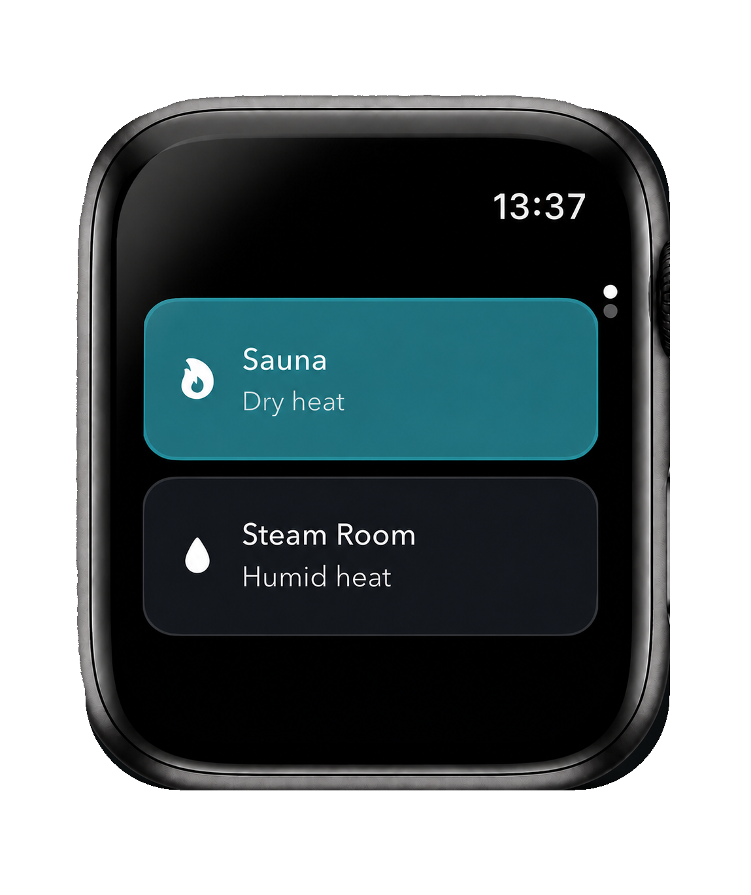

80°C / 176°F · 10% humidity
Adjust it on the Watch for a particular room. If you leave it untouched, the iPhone record marks it as the remembered default.
Sauna Log keeps the Watch flow to the decisions that matter, with large controls, background timing and haptics to guide you without needing to stare at the screen.
Tap Sauna or Steam Room. The choice takes you straight to the timer screen, even if you select the currently highlighted type.
Pick one of four defaults and slide to start. Defaults are managed on iPhone and flow to the Watch.
During the session, see time remaining, live heart rate, active and total calories, and the optional cold-shower setting. Slide to stop early or add more time when the timer completes.

The timer is designed to keep its timing when the display is off. End-of-session and heart-rate alerts can use Watch haptics and notifications when enabled.
Manual entry keeps the feature useful for public facilities and home setups without requiring extra hardware. Choose Celsius or Fahrenheit in the iPhone app and carry that preference across Apple Watch and session history.
Adjust it on the Watch for a particular room. If you leave it untouched, the iPhone record marks it as the remembered default.
Separate defaults mean a regular steam room does not overwrite your sauna setting.
Temperature and humidity are there when they add context, not as another task you have to complete.